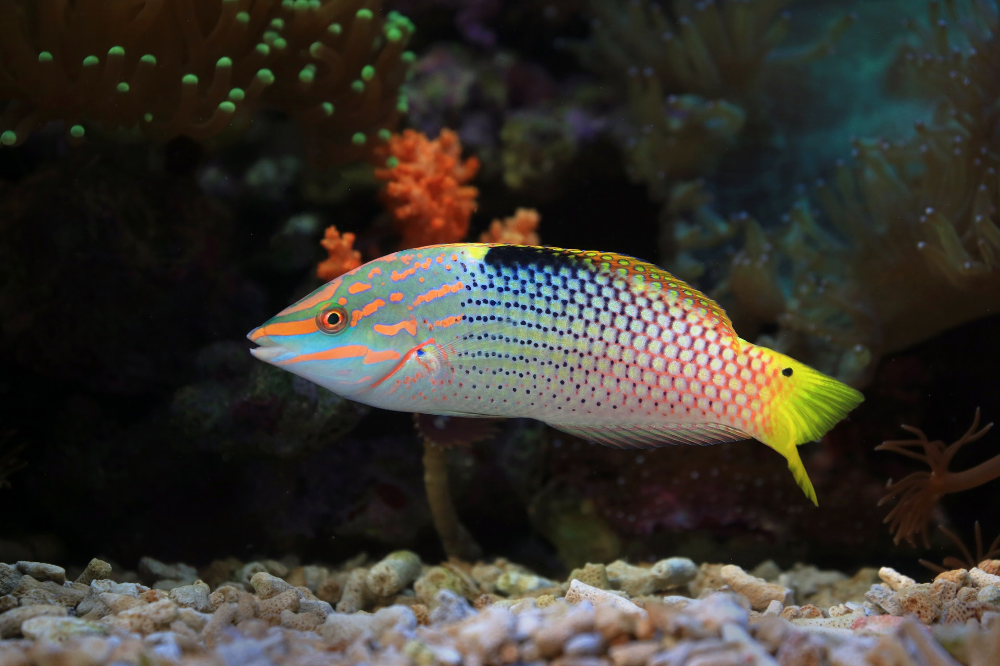
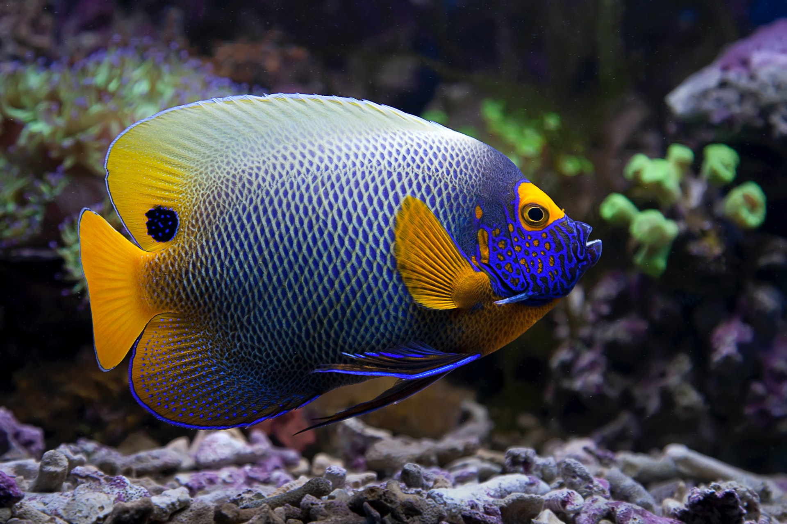
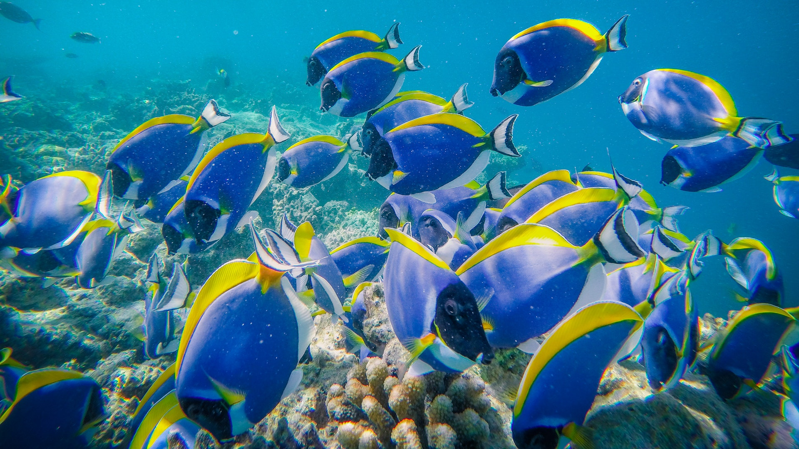
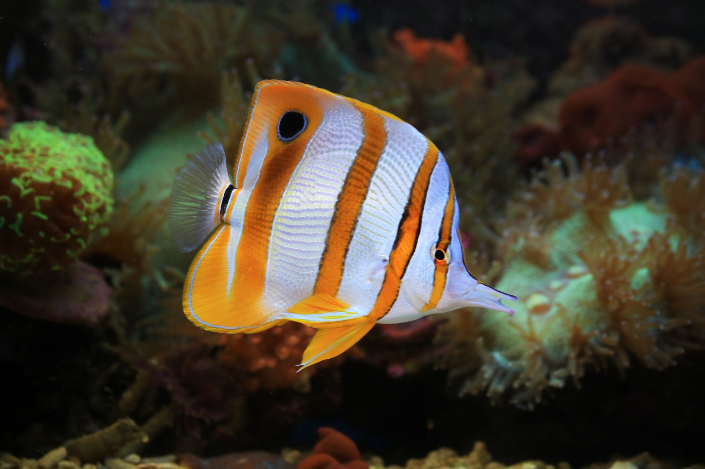

This fish is a type of wrasse. Wrasses protect corals by consuming any harmful pests on the coral's tissue


This is a type of angelfish. Angelfish are herbivorous and eat many types of algae and seaweed. They sometimes will pick at certain types of corals as well.

This is a school of Powder Blue Tangs. They are also herbivores but do not consume coral like the angelfish do.

This is a Copperband Butterfly fish. This fish is a carnivore and eats corals for its primary nourishment.